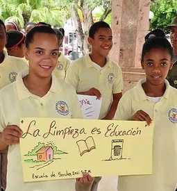
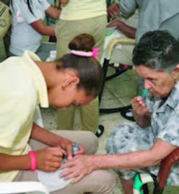
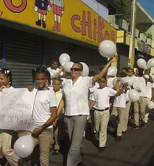
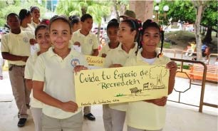
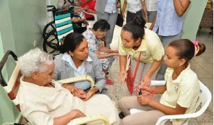
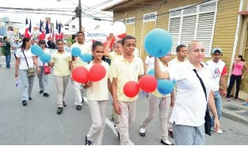
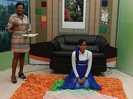
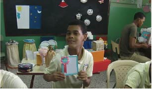
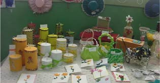
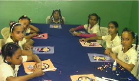

Involucrados en la Sociedad Cumpliendo Nuestro Rol
La Escuela Regional de Sordos, Inc., de San Francisco de Macorís, es un ente social activo de todo el nordeste. Nuestros estudiantes participan activamente en la ayuda social, llevan un mensaje de paz y amor, y son responsables con el rol social que tienen como estudiantes.| CONCIENCIA ECOLÓGICA  | AYUDA SOCIAL  | CAMINATA POR LA PAZ  |
| La Dirección de la Escuela y su cuerpo de profesores se esfuerzan por crear una consciencia ecológica en los alumnos, inculcándoles prácticas y conocimientos que le permitan cuidar el medio ambiente. | Alumnos y profesores de la Escuela visitan el hogar de ancianos de San Francisco de Macorís, en donde se integran al servicio, poniendo en práctica lo aprendido en los talleres. | Como una forma de contribuir con una Cultura de Paz, tanto en la sociedad como en los alumnos, se organizan actividades como caminatas y charlas de orientación. |
Servicio Social
| SERVICIO SOCIAL  | SERVICIO SOCIAL  | SERVICIO SOCIAL  |
Culturales
| CULTURALES | CULTURALES | CULTURALES  |
Manualidades
| MANUALIDADES  | MANUALIDADES  | MANUALIDADES  |